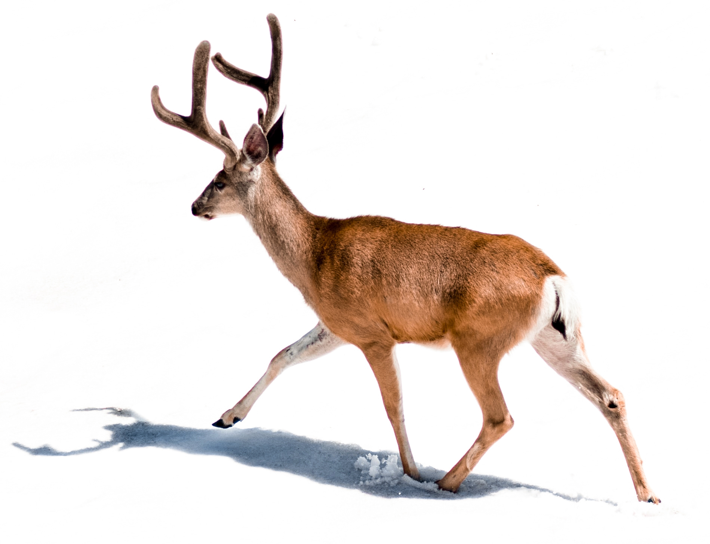

Deer (singular and plural) are the hoofed ruminant mammals forming the family Cervidae. The two main groups of deer are the Cervinae, including the muntjac, the elk (wapiti), the fallow deer, and the chital; and the Capreolinae, including the reindeer (caribou), the roe deer, and the moose. Female reindeer, and male deer of all species except the Chinese water deer, grow and shed new antlers each year. In this they differ from permanently horned antelope, which are part of a different family (Bovidae) within the same order of even-toed ungulates (Artiodactyla).
The musk deer (Moschidae) of Asia and chevrotains (Tragulidae) of tropical African and Asian forests are separate families within the ruminant clade (Ruminantia). They are no more closely related to deer than are other even-toed ungulates.
Deer appear in art from Paleolithic cave paintings onwards, and they have played a role in mythology, religion, and literature throughout history, as well as in heraldry. Their economic importance includes the use of their meat as venison, their skins as soft, strong buckskin, and their antlers as handles for knives. Deer hunting has been a popular activity since at least the Middle Ages and remains a resource for many families today.